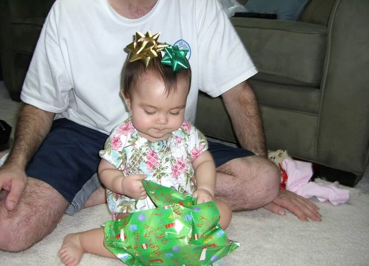

I love the holidays. Even though my favorite season is summer, there is something to be said about winter and its festivities. I have very fond memories of this time of year, mostly involving activities with family and friends. Though it is not the most optimal for some of my extraccuriculares, with soccer fields freezing over and being overrun with snow, it invites many exciting things. I mostly think of decorating cookies with my grandma and ice skating with friends. I even think of more unconventional things, like how thankful I am that this is the only time of year where I am the least suseptible to my allergies. Even though I will not be home this Christmas because we are going to visit family in Hawai'i, and I will therefore be missing just about everything that I associate with the holiday, I am still glad to be spending it with family. However, I hope I can still do some things with my friends when I get back, even if it is a little bit after the holidays are over.
